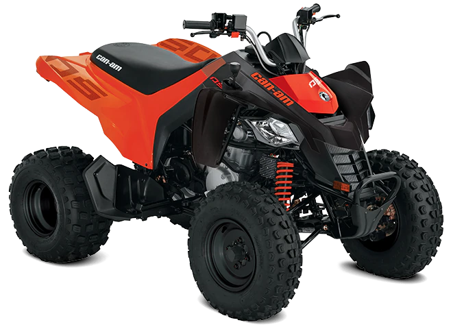

CANAN:DS90

La DS 90 de can-am es una motocicleta pensada para pequeños a partir de 10 años, se trata de una motocicleta recreativa donde los pequeños pueden empezar a descubrir si les gusta el mundo del motociclismo o simplemente para pasar un buen rato. Sin embargo, can-am con sus modelos DS busca brindar sensaciones parecidas a sus modelos de mayores prestaciones, por eso ha puesto el mejor diseño y calidad desde las más pequeñas.